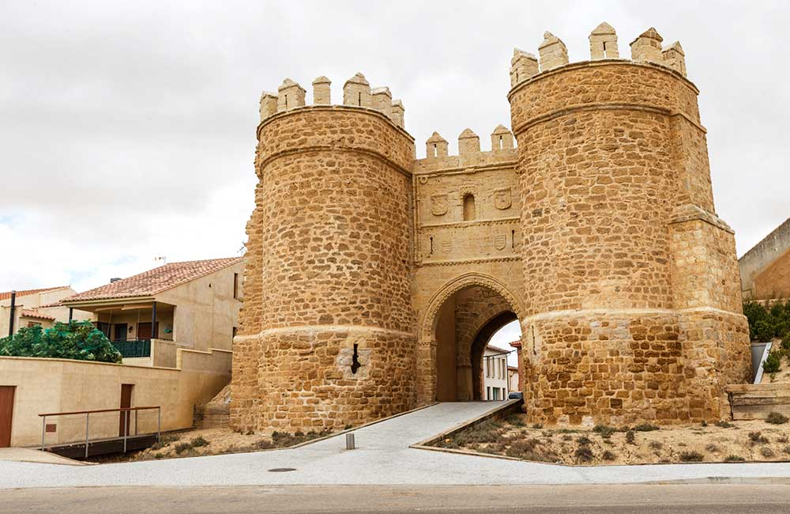

VILLALPANDO

Localización
Geografía
Historia
Cultura
Patrimonio
Localización
Villalpando es un municipio de la provincia de Zamora de la comunidad autónoma de Castilla y León (España). Capital del partido judicial del mismo nombre y de la comarca de la Tierra de Campos zamorana.
Geografía
Se sitúa al noreste de la provincia de Zamora formando parte de la comarca de Tierra de Campos zamorana y dista 52 kilómetros de la capital provincial. Está bien comunicado por la Autovía del Noroeste, que atraviesa el término municipal entre los pK 226 y 240, además de por la carretera autonómica que la unen a Palencia y Zamora (CL-612). El territorio municipal es atravesado por el río Valderaduey y por el río Bustillo o Navajos, que desemboca en el anterior en un punto cercano a la villa. El relieve del municipio está influido por el valle del río Valderaduey, que forma una amplia llanura óptima para el cultivo de cereales tan solo interrumpida por algunos montes con más vegetación. Aunque el pueblo se alza a 698 metros sobre el nivel del mar, el mayor de sus montes llamado Buenamadera llega a los 788 metros.
Historia
Edad Antigua
Tradicionalmente se ha ubicado en Villalpando el asentamiento vacceo-romano de Intercatia (que en el propio pueblo se conoce como Intercacia debido a la castellanización del término por el erudito local Luis Calvo a principios del siglo XX). La historiografía actual descarta, sin embargo, esta tesis debido a la falta de restos arqueológicos notables, identificables con un yacimiento de esta categoría, y a la inviabilidad de una ruta meridional de los itinerarios (Itinerario de Antonino y Ravennate) en este punto. No obstante se documentan en sus alrededores diversos restos vacceos, romanos (generalmente villas bajoimperiales como las de La Mambrilla o La Granja), e incluso visigodos, que muestran la riqueza arqueológica de la zona más allá de la decimonónica tendencia de ubicar en cada pueblo destacado un núcleo romano.
Edad Media
La existencia del lugar aparece documentado como Villa Alpández durante el reinado de Ramiro II de León, en el siglo X. Durante la siguiente centuria cobra gran importancia, dotándose con varias iglesias, adscritas a la Catedral y a San Isidoro de León, y adquierendo alfoz propio. Fernando II de León la repuebla y afora en la segunda mitad del siglo XII como defensa del Reino de León frente al de Castilla, dotándola de muralla y un primitivo castillo (ubicado entre Santa María la Antigua y San Isidoro), completado por la Orden del Temple tras la cesión de la villa a esta Orden por Alfonso IX de León en 1211. Anteriormente, Fernando II limitó las posesiones que en la villa debió tener la Orden de San Juan de Jerusalén a la que privó de un gran número de bienes de los que posteriormente devolvió algunos, como Cerecinos de Campos
El siglo XIII supone el mayor auge de la villa, ya vinculada a la Corona de Castilla, época en la desarrolla su propia vida, teniendo el derecho de celebrar mercado todos los martes, que poco después será ampliado también a los sábados. En el siglo XIV Villalpando perdió su voto en cortes, como otras ciudades del Reino de León, y pasó a manos de los Fernández de Velasco, duques de Frías, quienes construyeron el alcázar, pasando por este hecho a depender de Burgos en el voto en Cortes desde el siglo XV, al integrar la denominada Provincia de las Tierras del Condestable, si bien en otros ámbitos siguió dependiendo del Notario Mayor del Reino de León.
El hecho histórico más recordado tiene lugar en 1466 cuando se proclama la Inmaculada Concepción de María, siendo la primera vez que se produce un voto de villa a favor de dicho dogma popular. Voto que fue refrendado hasta cinco veces a lo largo de la historia y que culminó en la coronación canónica y solemne de la imagen de la Purísima de la Villa en 1954.
Edad Moderna
En el alcázar villalpandino estuvieron retenidos los dos hijos del rey francés Francisco I. Los entregó a Carlos I de España como rehenes, mientras él volvió a Francia para cumplir lo prometido en el Tratado de Madrid en enero de 1526. Cuando el francés anunció que no cumpliría el tratado por haberlo firmado bajo presión, el emperador ordenó que los príncipes y su numeroso séquito fueran encerrados en alguna de las fortalezas que poseía el duque de Frías. Primero estuvieron en Villalba de los Alcores y luego en Villalpando. Posteriormente, los príncipes y un reducido séquito fueron trasladados a Berlanga, Castilnovo y Pedraza.
Tras la pérdida de la condestabilía de los Velasco en 1711, Villalpando dejó de pertenecer al territorio conocido como Provincia de las Tierras del Condestable, dejando de depender de Burgos en el voto a Cortes, y pasando a hacerlo de León, en cuya provincia aparece integrando en 1786 en el mapa de Tomás López titulado «Mapa geográfico de una parte de la provincia de León».
Edad Contemporánea
Villalpando pasó a formar parte de la provincia de Valladolid tras la reforma de la división territorial de España en 1833, es decir, quedó adscrita a Castilla la Vieja, si bien tras las reclamaciones del concejo villalpandino, la villa pasó en 1858 a formar parte de la provincia de Zamora, por lo que quedó definitivamente integrada en la Región Leonesa. Tras la constitución de 1978, y la diversa normativa que la desarrolla, Villalpando pasó a formar parte en 1983 de la comunidad autónoma de Castilla y León, en tanto municipio adscrito a la provincia de Zamora.
Cultura
Las fiestas patronales se celebran durante varios días en torno al 16 de agosto, San Roque. Comienzan con el desfile de peñas, y durante los mismos se van sucediendo diversos actos civiles y religiosos, si bien estas fiestas son especialmente recordadas por la calidad y cantidad de sus festejos y encierros taurinos, estos últimos con más de cinco siglos de tradición, por lo que se consideran unos de los más antiguos de España.
Las fiestas de la Inmaculada se inician el día 6 de diciembre con un festejo taurino en la plaza mayor, el día 7 de diciembre es el día de los quintos, el cual los jóvenes llevan esperando mucho tiempo y con ilusión, el cual finaliza con el encendido de una gran hoguera y por último el día 8 de diciembre tiene lugar la fiesta de la Inmaculada celebrada con una procesión y una gran misa.
También, durante mediados de junio se celebra la Feria de la Madera en la cual muchos artesanos de los alrededores, en un puesto situado en la plaza, enseñan y venden sus productos.
Patrimonio
Ábside de Santa María (siglo XII)
La gran riqueza histórica del pueblo se evidencia en la multitud de monumentos que esconden sus calles. Destacan entre ellos los restos de las imponentes murallas y fortificaciones —hoy tristemente desaparecidas en la mayoría de su trazado— de las que sin embargo se conservan dos de las puertas monumentales, «la puerta de San Andrés» —la emblemática «Puerta Villa»— y la «puerta de Santiago», así como el «castillo de los Velasco».
Igualmente debe ser destacada la «iglesia de Santa María la Antigua» (último cuarto del siglo XII), en ruinas desde 1933 y monumento histórico-artístico nacional desde 1935, de la que se mantiene el majestuoso conjunto de la cabecera triabsidial, la potente torre del campanario (realizada sobre el lienzo de la muralla), y restos de sus muros y pilares, así como de sus pretiles (espacio singular del pueblo conocido como "los Petriles"), que evoca la 'Porta Nigra' de Trier (Tréveris) en Alemania, y la iglesia de san Tirso en Sahagún (León).
Dentro de los grandes monumentos del pueblo debe ser nombrada la gran «Plaza Mayor», de más de 2000 m², espacio rectangular porticado que incluye el «Ayuntamiento del municipio».
De gran interés son el «convento de San Antonio de Padua» (de Clarisas), el «hospital del Espíritu Santo» y las iglesias de «San Nicolás de Bari» (último cuarto del siglo XII), arruinada en 1989 y reconstruida en la actualidad, «San Pedro», fundada en el último cuarto del siglo XII, de cuya construcción sólo resta el muro del altar y los inicios de la espadaña (originariamente una torre-campanario de la muralla, como la de Santa María), construida en su mayoría, sin embargo, poco después, durante el primer cuarto del siglo XIII, el monasterio de San Lorenzo, probablemente del primer cuarto del siglo XIII, situado extramuros, arruinado totalmente sólo conserva la torre de su iglesia, quizá obra defensiva del último cuarto del siglo XII,y, finalmente, «San Miguel», en ruinas aunque con restos de su espadaña y naves.
Enlaces a algunas páginas de interes:
